Radio Latacunga
INICIO
QUIENES SOMOS?
MISIÓN
VISIÓN
FINALIDAD
OBJETIVO
PROGRAMACIÓN
PROGRAMACIÓN DE LUNES A VIERNES
04H00 A 04H30:
SANTO ROSARIO
04h30 A 06H00:
Nuestra Palabra RADIO REVISTA MISCELANIA
06H00 A 08H00:
EL INFORMADOR I
08H00 A 09H00:
CAMINANTES
09h00 A 12H00:
RUMBO AL MEDIO DIA
12h00 A 12h15:
INFORMATIVO CONTACTO SUR
12h15 A 12h30:
ECUADOR EN CONTACTO II
12h30 A 14h00:
MUSICA VARIADA
14h00 A 17h00:
SIN LIMITE
17h00 A 18h00:
EL INFORMADOR II
18h00 A 18h30:
ECUADOR EN CONTACTO TERCERA EMISIÓN
18h30 A 21h00:
AYLLUYARISHUNCHIK
PROGRAMACIÓN SÁBADOS
04H00 A 04H30:
SANTO ROSARIO
04h30 A 06H00:
Nuestra Palabra RADIO REVISTA MISCELANIA
06h00 A 07H00:
RESUMEN INFORMATIVO
07h00 A 08h00:
CONSTRUYENDO LA PALABRA
08h00 A 10h00:
SABADO A SABADO
13h00 A 18h00:
CHUQUIRAHUA Y ALPARGATAS
18h00 A 21h00:
AYLLUYARISHUNCHIK
PROGRAMACIÓN DOMINGOS/ DOMINGO EN FAMILIA
06H00 A 07H00:
RESPLANDOR
07H00 A 08H00:
AQUÍ ENTRE NOS
08H00 A 09H00:
MISA DOMINICAL
09H00 A 10H30:
UN PUEBLO QUE CAMINA
10H30 A 11H30:
SALUD CON ACTITUD
11H30 A 12H00:
VOCES DE LA ESPERANZA
12H00 A 13H00:
VOCES DE LIBERTAD
13H00 A 18H00:
CRUZANDO LA SIERRA
18H00 A 21H00:
AYLLUYARISHUNCHIK DOMINICAL
NOTICIAS
CONTACTOS
REDES SOCIALES
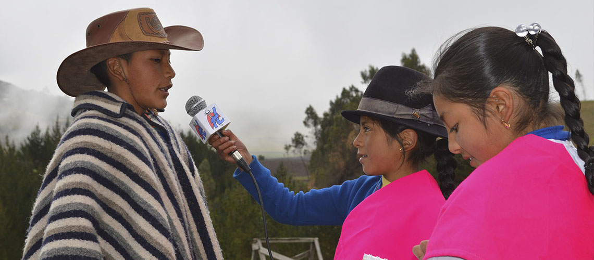
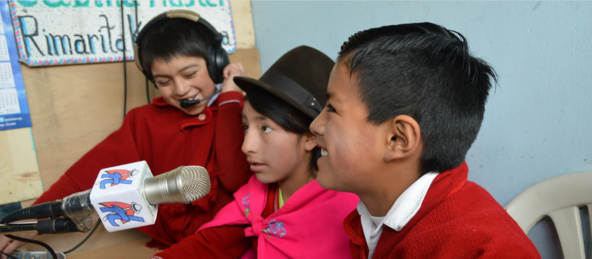
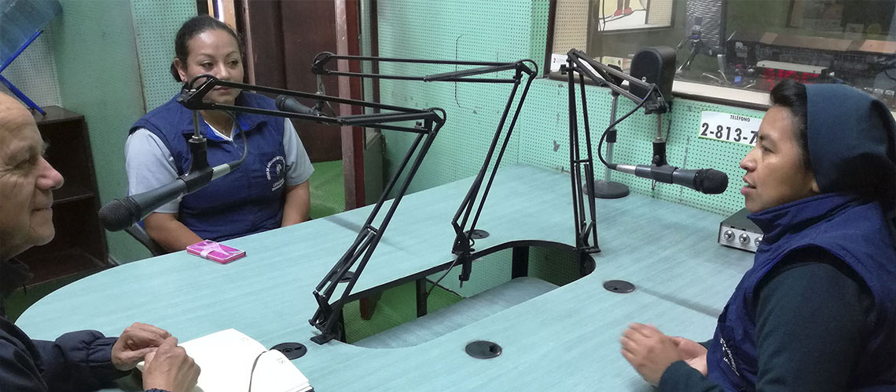
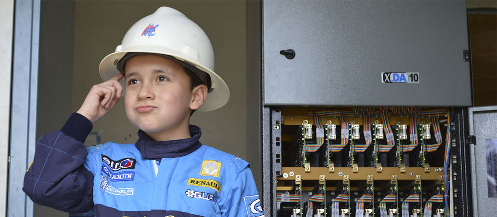
Previous
Next
TOP
VIDEOS
TIME
LINE
PROGRAMACIÓN
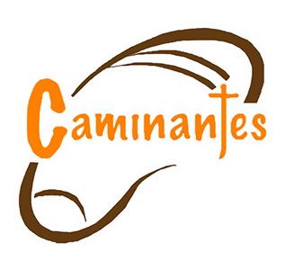
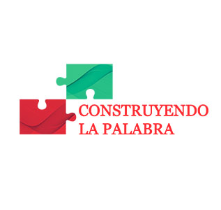
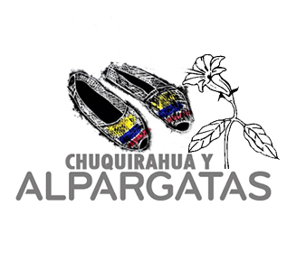
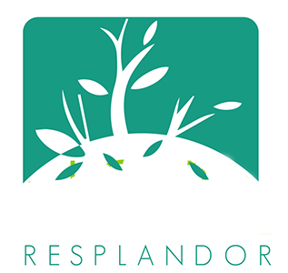
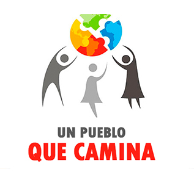
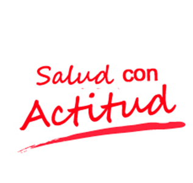
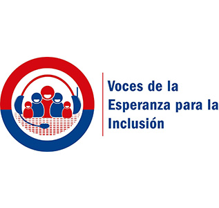
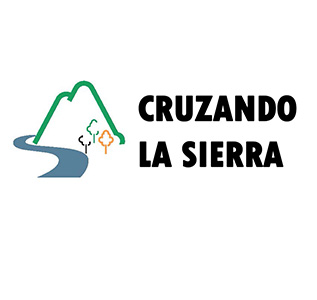
×
13H00 A 18H00
CRUZANDO LA SIERRA
Programa con música amena y variada que acompaña al finalizar el fin de semana.
NOTICIAS
Tweets Liked by @TwitterDev
PUBLICIDAD
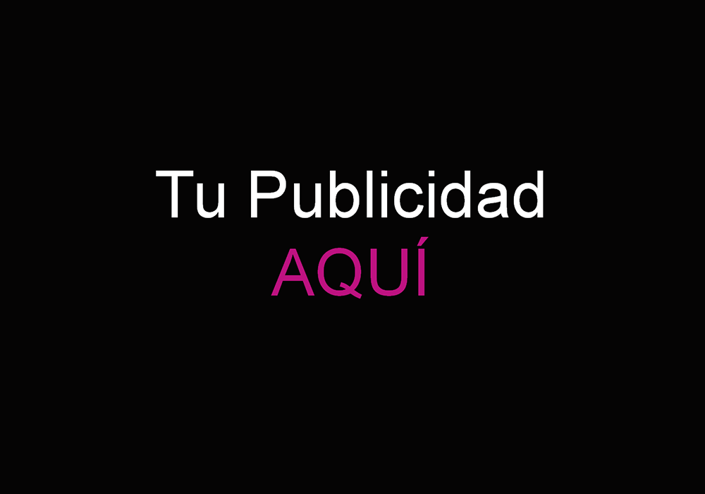
Previous
Next
Copyright © 2017 RADIO LATACUNGA